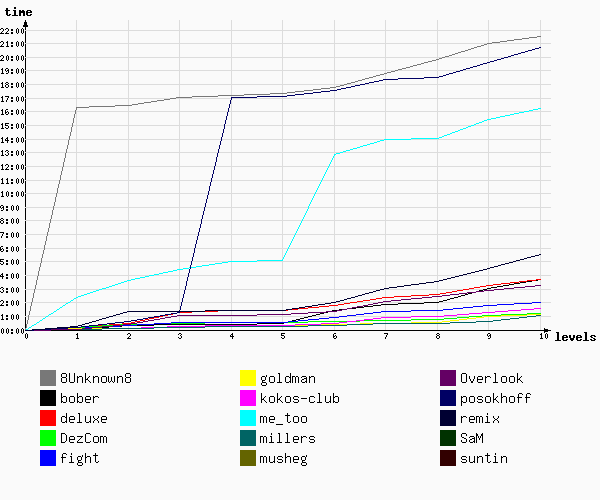

Игра №7
Тип игры: Открытая
Описание: Виртуальные радости
Принадлежности:
| Место | Команда | Уровней пройдено | Время уровней | Всего | ||
|---|---|---|---|---|---|---|
| Активного | Штрафы | Бонусы | ||||
| 1 | millers | 10 | 01:05:10 | 0 | 0 | 01:05:10 |
| 2 | goldman | 10 | 01:07:50 | 0 | 0 | 01:07:50 |
| 3 | DezCom | 10 | 01:13:03 | 0 | 0 | 01:13:03 |
| 4 | kokos-club | 10 | 01:34:35 | 0 | 0 | 01:34:35 |
| 5 | fight | 10 | 02:00:24 | 0 | 0 | 02:00:24 |
| 6 | deluxe | 10 | 03:42:29 | 0 | 0 | 03:42:29 |
| 7 | Overlook | 10 | 03:47:17 | 0 | 0 | 03:47:17 |
| 8 | bober | 10 | 03:53:52 | 0 | 0 | 03:53:52 |
| 9 | remix | 10 | 05:32:09 | 0 | 0 | 05:32:09 |
| 10 | me_too | 10 | 16:18:18 | 0 | 0 | 16:18:18 |
| 11 | posokhoff | 10 | 20:44:38 | 0 | 0 | 20:44:38 |
| 12 | 8Unknown8 | 10 | 21:31:52 | 0 | 0 | 21:31:52 |
| 13 | SaM | 0 | 12810:09:24 | 0 | 0 | 12810:09:24 |
| 14 | musheg | 0 | 12810:09:24 | 0 | 0 | 12810:09:24 |
| 15 | suntin | 0 | 12810:09:24 | 0 | 0 | 12810:09:24 |
| 16 | Яр | 0 | 12810:09:24 | 0 | 0 | 12810:09:24 |

| 1 | 2 | 3 | 4 | 5 | 6 | 7 | 8 | 9 | 10 | ||
| 1 | kokos-club 22:03:24 | kokos-club 22:06:26 | millers 22:09:49 | goldman 22:13:37 | goldman 22:15:01 | millers 22:19:08 | millers 22:26:58 | millers 22:29:54 | millers 22:37:54 | millers 23:05:10 | 1 |
| 2 | millers 22:04:03 | goldman 22:07:40 | goldman 22:10:38 | millers 22:15:09 | millers 22:16:28 | goldman 22:22:35 | goldman 22:29:07 | goldman 22:31:52 | goldman 22:58:04 | goldman 23:07:50 | 2 |
| 3 | goldman 22:05:01 | millers 22:08:47 | kokos-club 22:14:01 | kokos-club 22:17:44 | kokos-club 22:18:51 | kokos-club 22:28:02 | Dezcom 22:43:04 | dezcom 22:45:38 | dezcom 23:02:59 | dezcom 23:13:03 | 3 |
| 4 | fight 22:06:22 | fight 22:18:38 | Dezcom 22:27:37 | Dezcom 22:30:50 | dezcom 22:32:29 | Dezcom 22:36:53 | kokos-club 22:56:57 | kokos-club 23:01:34 | kokos-club 23:16:06 | kokos-club 23:34:35 | 4 |
| 5 | deluxe 22:09:05 | Dezcom 22:22:31 | fight 22:31:04 | fight 22:32:46 | fight 22:34:02 | fight 22:53:42 | fight 23:21:54 | fight 23:25:00 | fight 23:47:02 | fight 00:00:24 | 5 |
| 6 | DezCom 22:11:52 | deluxe 22:28:52 | bober 22:32:36 | bober 22:34:08 | bober 22:36:35 | bober 23:37:45 timeout. 0 мин. | bober 00:01:50 | bober 00:12:26 | bober 01:12:36 timeout. 0 мин. | deluxe 01:42:29 | 6 |
| 7 | posokhoff 22:12:33 | bober 22:28:59 | deluxe 23:17:12 | deluxe 23:24:53 | remix 23:25:44 | deluxe 23:45:53 | deluxe 00:23:05 | deluxe 00:37:19 | deluxe 01:13:53 | Overlook 01:47:17 | 7 |
| 8 | bober 22:13:25 | posokhoff 22:36:09 | posokhoff 23:18:12 | remix 23:25:09 | deluxe 23:26:14 | Overlook 23:52:23 | Overlook 00:36:42 | Overlook 01:00:01 | Overlook 01:23:18 | bober 01:53:52 | 8 |
| 9 | remix 22:17:34 | Overlook 22:55:32 | remix 23:23:33 | Overlook 23:37:12 | Overlook 23:39:02 | remix 00:01:13 | Remix 01:03:26 timeout. 0 мин. | Remix 01:31:27 | remix 02:31:44 timeout. 0 мин. | Remix 03:32:09 timeout. 0 мин. | 9 |
| 10 | Overlook 22:34:08 | remix 23:19:26 timeout. 0 мин. | Overlook 23:36:25 | me_too 03:04:54 | me_too 03:08:59 | me_too 10:56:08 timeout. 0 мин. | me_too 12:02:49 timeout. 0 мин. | me_too 12:08:39 | me_too 13:29:54 timeout. 0 мин. | me_too 14:18:18 | 10 |
| 11 | me_too 00:25:36 timeout. 0 мин. | me_too 01:42:16 timeout. 0 мин. | me_too 02:28:56 | posokhoff 15:02:10 timeout. 0 мин. | posokhoff 15:06:01 | posokhoff 15:34:11 | posokhoff 16:20:51 | posokhoff 16:31:22 | posokhoff 17:36:48 timeout. 0 мин. | posokhoff 18:44:38 timeout. 0 мин. | 11 |
| 12 | 8Unknown8 14:19:47 timeout. 0 мин. | 8Unknown8 14:26:21 | 8Unknown8 15:02:08 | 8Unknown8 15:12:37 | 8Unknown8 15:19:20 | 8Unknown8 15:45:10 | 8Unknown8 16:47:29 timeout. 0 мин. | 8Unknown8 17:50:13 timeout. 0 мин. | 8Unknown8 18:58:39 timeout. 0 мин. | 8Unknown8 19:31:52 | 12 |
| 1 | 2 | 3 | 4 | 5 | 6 | 7 | 8 | 9 | 10 |
Уровень 1.
| № | Команда | Старт | Завершение | Штраф | Продолжительность | Бонусы |
|---|---|---|---|---|---|---|
| 1 | Overlook | 22:31:29 | 22:34:08 | 02:39 | ||
| 2 | bober | 22:10:08 | 22:13:25 | 03:17 | ||
| 3 | kokos-club | 22:00:00 | 22:03:24 | 03:24 | ||
| 4 | millers | 22:00:01 | 22:04:03 | 04:02 | ||
| 5 | goldman | 22:00:01 | 22:05:01 | 05:00 | ||
| 6 | fight | 22:00:12 | 22:06:22 | 06:10 | ||
| 7 | deluxe | 22:00:00 | 22:09:05 | 09:05 | ||
| 8 | DezCom | 22:00:01 | 22:11:52 | 11:51 | ||
| 9 | posokhoff | 22:00:12 | 22:12:33 | 12:21 | ||
| 10 | remix | 22:00:03 | 22:17:34 | 17:31 | ||
| 11 | me_too | 22:03:54 | 00:25:36 | timeout 0 | 02:21:42 | |
| 12 | 8Unknown8 | 22:00:00 | 14:19:47 | timeout 0 | 16:19:47 |
Задание :
Эта компания участвует в разработке грядущего продолжения серии Heroes of Might and Magic.
Назовите имя одного из руководителей этой компании, который так же является одним из дизайнеров вышеупомянутого проекта.
Ответ: сх+имя+фамилия (на русском или английском)
"сх" везде вводите только на русском

схalexandermishulin
Уровень 2.
| № | Команда | Старт | Завершение | Штраф | Продолжительность | Бонусы |
|---|---|---|---|---|---|---|
| 1 | goldman | 22:05:01 | 22:07:40 | 02:39 | ||
| 2 | kokos-club | 22:03:24 | 22:06:26 | 03:02 | ||
| 3 | millers | 22:04:03 | 22:08:47 | 04:44 | ||
| 4 | 8Unknown8 | 14:19:47 | 14:26:21 | 06:34 | ||
| 5 | Dezcom | 22:11:52 | 22:22:31 | 10:39 | ||
| 6 | fight | 22:06:22 | 22:18:38 | 12:16 | ||
| 7 | bober | 22:13:25 | 22:28:59 | 15:34 | ||
| 8 | deluxe | 22:09:05 | 22:28:52 | 19:47 | ||
| 9 | Overlook | 22:34:08 | 22:55:32 | 21:24 | ||
| 10 | posokhoff | 22:12:33 | 22:36:09 | 23:36 | ||
| 11 | remix | 22:17:34 | 23:19:26 | timeout 0 | 01:01:52 | |
| 12 | me_too | 00:25:36 | 01:42:16 | timeout 0 | 01:16:40 |
Задание :
Какой третий сайт напрямую связан с love.mail.ru и аналогичным сервисом знакомств рамблера?
Ответ: сх+сайт (без http)
"сх" везде вводите только на русском
Уровень 3.
| № | Команда | Старт | Завершение | Штраф | Продолжительность | Бонусы |
|---|---|---|---|---|---|---|
| 1 | millers | 22:08:47 | 22:09:49 | 01:02 | ||
| 2 | goldman | 22:07:40 | 22:10:38 | 02:58 | ||
| 3 | bober | 22:28:59 | 22:32:36 | 03:37 | ||
| 4 | remix | 23:19:26 | 23:23:33 | 04:07 | ||
| 5 | Dezcom | 22:22:31 | 22:27:37 | 05:06 | ||
| 6 | kokos-club | 22:06:26 | 22:14:01 | 07:35 | ||
| 7 | fight | 22:18:38 | 22:31:04 | 12:26 | ||
| 8 | 8Unknown8 | 14:26:21 | 15:02:08 | 35:47 | ||
| 9 | Overlook | 22:55:32 | 23:36:25 | 40:53 | ||
| 10 | posokhoff | 22:36:09 | 23:18:12 | 42:03 | ||
| 11 | me_too | 01:42:16 | 02:28:56 | 46:40 | ||
| 12 | deluxe | 22:28:52 | 23:17:12 | 48:20 |
Задание :
Исли верить источникам в интернете, именно этому актеру принадлежат слова, которые вдохновили разработчиков ID создать легендаргую игру (и назвать её именно так), 3-я часть которой поступила в продажу в прошлом году.
А совсем скоро выйдет фильм, снятый по мотивам сюжета этой легендарной игры.
Ответ: сх+имя+фамилия (на русском или английском)
"сх" везде вводите только на русском
Уровень 4.
| № | Команда | Старт | Завершение | Штраф | Продолжительность | Бонусы |
|---|---|---|---|---|---|---|
| 1 | Overlook | 23:36:25 | 23:37:12 | 00:47 | ||
| 2 | bober | 22:32:36 | 22:34:08 | 01:32 | ||
| 3 | remix | 23:23:33 | 23:25:09 | 01:36 | ||
| 4 | fight | 22:31:04 | 22:32:46 | 01:42 | ||
| 5 | goldman | 22:10:38 | 22:13:37 | 02:59 | ||
| 6 | Dezcom | 22:27:37 | 22:30:50 | 03:13 | ||
| 7 | kokos-club | 22:14:01 | 22:17:44 | 03:43 | ||
| 8 | millers | 22:09:49 | 22:15:09 | 05:20 | ||
| 9 | deluxe | 23:17:12 | 23:24:53 | 07:41 | ||
| 10 | 8Unknown8 | 15:02:08 | 15:12:37 | 10:29 | ||
| 11 | me_too | 02:28:56 | 03:04:54 | 35:58 | ||
| 12 | posokhoff | 23:18:12 | 15:02:10 | timeout 0 | 15:43:58 |
Задание :
Назовите ближайший населенный пункт от поселка Ессей.
Ответ: сх+название н.п. (на русском)
"сх" везде вводите только на русском
Уровень 5.
| № | Команда | Старт | Завершение | Штраф | Продолжительность | Бонусы |
|---|---|---|---|---|---|---|
| 1 | remix | 23:25:09 | 23:25:44 | 00:35 | ||
| 2 | kokos-club | 22:17:44 | 22:18:51 | 01:07 | ||
| 3 | fight | 22:32:46 | 22:34:02 | 01:16 | ||
| 4 | millers | 22:15:09 | 22:16:28 | 01:19 | ||
| 5 | deluxe | 23:24:53 | 23:26:14 | 01:21 | ||
| 6 | goldman | 22:13:37 | 22:15:01 | 01:24 | ||
| 7 | dezcom | 22:30:50 | 22:32:29 | 01:39 | ||
| 8 | Overlook | 23:37:12 | 23:39:02 | 01:50 | ||
| 9 | bober | 22:34:08 | 22:36:35 | 02:27 | ||
| 10 | posokhoff | 15:02:10 | 15:06:01 | 03:51 | ||
| 11 | me_too | 03:04:54 | 03:08:59 | 04:05 | ||
| 12 | 8Unknown8 | 15:12:37 | 15:19:20 | 06:43 |
Задание :
Назовите фамилии 2-ух основателей компании, которая известна предоставлением поисковых сервисов. Название компании произошло от математического термина, единицы с очень большим количеством нулей.
Ответ: сх+фамилия+фамилия (в алфавитном порядке на русском или английском)
"сх" везде вводите только на русском
Уровень 6.
| № | Команда | Старт | Завершение | Штраф | Продолжительность | Бонусы |
|---|---|---|---|---|---|---|
| 1 | millers | 22:16:28 | 22:19:08 | 02:40 | ||
| 2 | Dezcom | 22:32:29 | 22:36:53 | 04:24 | ||
| 3 | goldman | 22:15:01 | 22:22:35 | 07:34 | ||
| 4 | kokos-club | 22:18:51 | 22:28:02 | 09:11 | ||
| 5 | Overlook | 23:39:02 | 23:52:23 | 13:21 | ||
| 6 | deluxe | 23:26:14 | 23:45:53 | 19:39 | ||
| 7 | fight | 22:34:02 | 22:53:42 | 19:40 | ||
| 8 | 8Unknown8 | 15:19:20 | 15:45:10 | 25:50 | ||
| 9 | posokhoff | 15:06:01 | 15:34:11 | 28:10 | ||
| 10 | remix | 23:25:44 | 00:01:13 | 35:29 | ||
| 11 | bober | 22:36:35 | 23:37:45 | timeout 0 | 01:01:10 | |
| 12 | me_too | 03:08:59 | 10:56:08 | timeout 0 | 07:47:09 |
Задание :
Первую букву вы найдете справа от вазы на столе, вторую на её дне, третью ищите на мордочке кота, 4-ую букву вы найдете из надписи (в оригинале) на горшке. Считайте что это буква а не цифра. 5-ая буква на одном из цветков. 6-ую цифру ищите на теле котика. 7-ая внизу на столе, а последняя на стенке за горшком.
Картинка размером более 800к. Загрузка может занять некоторое время.
Ответ: сх + (найденные буквы, все на русском)
Подсказок на этом уровне не будет (кроме третей - ответа).
"сх" везде вводите только на русском
Уровень 7.
| № | Команда | Старт | Завершение | Штраф | Продолжительность | Бонусы |
|---|---|---|---|---|---|---|
| 1 | Dezcom | 22:36:53 | 22:43:04 | 06:11 | ||
| 2 | goldman | 22:22:35 | 22:29:07 | 06:32 | ||
| 3 | millers | 22:19:08 | 22:26:58 | 07:50 | ||
| 4 | bober | 23:37:45 | 00:01:50 | 24:05 | ||
| 5 | fight | 22:53:42 | 23:21:54 | 28:12 | ||
| 6 | kokos-club | 22:28:02 | 22:56:57 | 28:55 | ||
| 7 | deluxe | 23:45:53 | 00:23:05 | 37:12 | ||
| 8 | Overlook | 23:52:23 | 00:36:42 | 44:19 | ||
| 9 | posokhoff | 15:34:11 | 16:20:51 | 46:40 | ||
| 10 | Remix | 00:01:13 | 01:03:26 | timeout 0 | 01:02:13 | |
| 11 | 8Unknown8 | 15:45:10 | 16:47:29 | timeout 0 | 01:02:19 | |
| 12 | me_too | 10:56:08 | 12:02:49 | timeout 0 | 01:06:41 |
Задание :
В одном из самых больших on-line магазинов в мире, основанном в сентябре 1995 года вы можете найти предложение купить "тройку" в Уралах. Ключ будет местонахождение. (город из "location") этой "тройки".
Овтет: сх+location (язык как в источнике)
"сх" везде вводите только на русском
Уровень 8.
| № | Команда | Старт | Завершение | Штраф | Продолжительность | Бонусы |
|---|---|---|---|---|---|---|
| 1 | dezcom | 22:43:04 | 22:45:38 | 02:34 | ||
| 2 | goldman | 22:29:07 | 22:31:52 | 02:45 | ||
| 3 | millers | 22:26:58 | 22:29:54 | 02:56 | ||
| 4 | fight | 23:21:54 | 23:25:00 | 03:06 | ||
| 5 | kokos-club | 22:56:57 | 23:01:34 | 04:37 | ||
| 6 | me_too | 12:02:49 | 12:08:39 | 05:50 | ||
| 7 | posokhoff | 16:20:51 | 16:31:22 | 10:31 | ||
| 8 | bober | 00:01:50 | 00:12:26 | 10:36 | ||
| 9 | deluxe | 00:23:05 | 00:37:19 | 14:14 | ||
| 10 | Overlook | 00:36:42 | 01:00:01 | 23:19 | ||
| 11 | Remix | 01:03:26 | 01:31:27 | 28:01 | ||
| 12 | 8Unknown8 | 16:47:29 | 17:50:13 | timeout 0 | 01:02:44 |
Задание :
Когда и в какой стране состоится событие года в мире компьютерных игр. Открытие финальной части чемпионата мира, а скорее олимпиады в мире кибер спорта...
Ответ: сх+ДДММ+страна (на русском или английском)
"сх" везде вводите только на русском
Уровень 9.
| № | Команда | Старт | Завершение | Штраф | Продолжительность | Бонусы |
|---|---|---|---|---|---|---|
| 1 | millers | 22:29:54 | 22:37:54 | 08:00 | ||
| 2 | kokos-club | 23:01:34 | 23:16:06 | 14:32 | ||
| 3 | dezcom | 22:45:38 | 23:02:59 | 17:21 | ||
| 4 | fight | 23:25:00 | 23:47:02 | 22:02 | ||
| 5 | Overlook | 01:00:01 | 01:23:18 | 23:17 | ||
| 6 | goldman | 22:31:52 | 22:58:04 | 26:12 | ||
| 7 | deluxe | 00:37:19 | 01:13:53 | 36:34 | ||
| 8 | bober | 00:12:26 | 01:12:36 | timeout 0 | 01:00:10 | |
| 9 | remix | 01:31:27 | 02:31:44 | timeout 0 | 01:00:17 | |
| 10 | posokhoff | 16:31:22 | 17:36:48 | timeout 0 | 01:05:26 | |
| 11 | 8Unknown8 | 17:50:13 | 18:58:39 | timeout 0 | 01:08:26 | |
| 12 | me_too | 12:08:39 | 13:29:54 | timeout 0 | 01:21:15 |
Задание :
Вам необходимо посчитать сумму в рублях из формулы. Данные используйте с сайта «РосБизнесКонсалтинг». Для вычислений все переводите в рубли и округляйте до сотых. Использовать курсы на указанные в формуле даты.
48 датских крон 18.09.97 - 248 казахских тенге 24.03.03 + 147 финляндских марок(с комиссией 2%) 09.06.01 + 411 японская иена(с комиссией 3%) 17.05.04 + 236 швейцарских франков(с комиссией 2%) 16.09.00 -89 украинских гривен 21.11.98 - 21 сингапурский доллар 05.01.05 + 125 000 белорусских рублей 15.04.01 - 91 португальский эскудо 02.12.00 + 62 турецкие лиры 13.08.02.
Ответ: сх+цифры (без запятой или точки, т.е "4.08"=408)
"сх" везде вводите только на русском
Уровень 10.
| № | Команда | Старт | Завершение | Штраф | Продолжительность | Бонусы |
|---|---|---|---|---|---|---|
| 1 | goldman | 22:58:04 | 23:07:50 | 09:46 | ||
| 2 | dezcom | 23:02:59 | 23:13:03 | 10:04 | ||
| 3 | fight | 23:47:02 | 00:00:24 | 13:22 | ||
| 4 | kokos-club | 23:16:06 | 23:34:35 | 18:29 | ||
| 5 | Overlook | 01:23:18 | 01:47:17 | 23:59 | ||
| 6 | millers | 22:37:54 | 23:05:10 | 27:16 | ||
| 7 | deluxe | 01:13:53 | 01:42:29 | 28:36 | ||
| 8 | 8Unknown8 | 18:58:39 | 19:31:52 | 33:13 | ||
| 9 | bober | 01:12:36 | 01:53:52 | 41:16 | ||
| 10 | me_too | 13:29:54 | 14:18:18 | 48:24 | ||
| 11 | Remix | 02:31:44 | 03:32:09 | timeout 0 | 01:00:25 | |
| 12 | posokhoff | 17:36:48 | 18:44:38 | timeout 0 | 01:07:50 |
Задание :
Сколько будет стоить доставка быка весом 400 кг от станции Ерофей Павлович до станции Гагарин скотовозом? Ответ округлить до рублей, и не забудьте НДС!
прейскурант 10-01 (1001), Тарифное руководство №4
Посторайтесь внимательно вводить данные на сайте. Первый раз считает быстро, второй уже в несколько раз дольше.
Ответ: сх+цифры (без запятой или точки, т.е "4.08"=408)
"сх" везде вводите только на русском